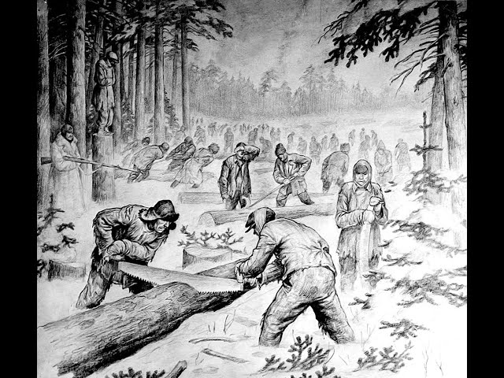
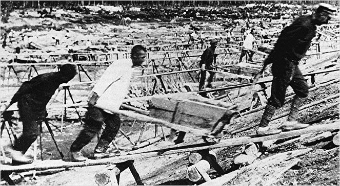
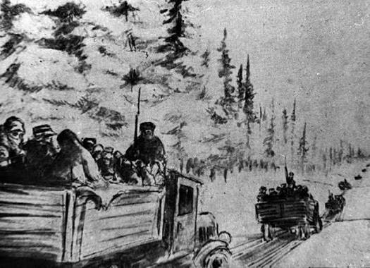
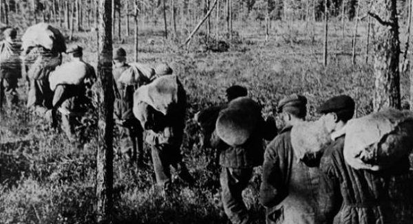
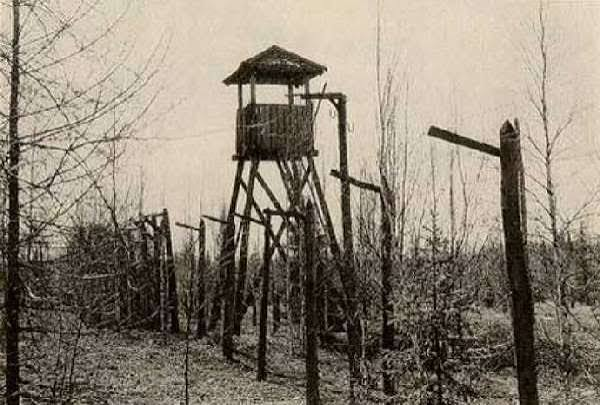

Problematyka
Osoba odpowiedzialna za treść sekcji: Magdalena Kokot
|
„Inny świat” to książka, która pokazuje życie ludzi w sowieckich łagrach, czyli obozach pracy przymusowej. Autor opisuje rzeczywistość, w której człowiek zostaje pozbawiony wolności, godności i podstawowych praw. Więźniowie muszą zmagać się z głodem, ciężką pracą, chorobami, zimnem i ciągłym strachem o własne życie. Obozowa rzeczywistość jest tak brutalna, że trudno ją porównać ze zwykłym życiem poza murami obozu. |
 |
|
 |
Jednym z najważniejszych problemów poruszonych w utworze jest walka o przetrwanie. Więźniowie często są zmuszeni myśleć przede wszystkim o zdobyciu jedzenia i uniknięciu dodatkowej pracy. Głód i wycieńczenie sprawiają, że niektórzy zaczynają zapominać o zasadach moralnych, a nawet krzywdzą innych, żeby samemu przeżyć. Pokazuje to, jak bardzo skrajne warunki mogą zmienić ludzkie zachowanie. |
|
Kolejnym ważnym tematem jest degradacja człowieka i odbieranie mu godności. W łagrze więźniowie są traktowani bardziej jak narzędzia do pracy niż jak ludzie. Nie mają wpływu na swoje życie, są poniżani i zmuszani do wykonywania wyczerpujących obowiązków. Mimo tego niektórzy starają się zachować człowieczeństwo, pomagać innym i nie rezygnować ze swoich wartości. |

|
|
 |
Autor zwraca również uwagę na znaczenie nadziei, przyjaźni i solidarności. Nawet w tak okrutnym miejscu zdarzają się sytuacje, w których ludzie wspierają się nawzajem. Takie zachowania pokazują, że nie wszyscy tracą swoje człowieczeństwo. Dla niektórych więźniów wiara w odzyskanie wolności staje się jedynym powodem, żeby dalej żyć. |
|
Ważnym problemem jest także wpływ systemu totalitarnego na psychikę człowieka. Władza wykorzystuje strach, przemoc i manipulację, aby całkowicie podporządkować sobie ludzi. Człowiek zostaje pozbawiony poczucia bezpieczeństwa i nie wie, co przyniesie kolejny dzień. Autor pokazuje, że taki system niszczy nie tylko ciało, ale również psychikę i relacje między ludźmi. |
 |
Postacie
Osoba odpowiedzialna za treść sekcji: Natalia Gawenda
Gustaw Herling-Grudziński„Człowiek nie może żyć, nie wiedząc, po co żyje.” „Nie było to miasto Smutku; było to miasto, w którym nigdy nie gościła Radość.” Główny bohater powieści, a zarazem autor dzieła, miał 21 lat, gdy został złapany na granicy sowiecko-litewskiej i zesłany do łagrów w 1940 roku. "Inny świat" jest jego biografią, opisującą nieludzkie warunki i dehumanizację dziejącą się w obozach oraz walkę o życie, której musieli się podjąć więźniowie w czasie ich zesłania. |
Michaił Aleksiejewicz Kostylew„Kostylew usta miał wąskie, dłonie zaś wielkie jak kowalskie młoty. Prawa spoczywała zawsze na temblaku, zawinięta w opatrunek.” Kostylew był z pochodzenia Rosjaninem, który czytając literaturę francuską zaczął wątpić w system. Został przez to skazany na 10 lat łagrów. Aby nie stać się częścią sowieckiego systemu, zaczął podpalać sobie rękę. Miało to skutkować zwolnieniu z ciężkich prac. Jego strategia działała przez jakiś czas, dopóki nie postanowiono przenieść go do innego obozu. Załamany Kostylew popełnił samobójstwo wylewając na siebie wrzątek. |
Gorcew„Ja takich jak wy basmaczów strzelałem tuzinami jak wróble na gałęzi!” Młody mężczyzna, który był członkiem NKWD, trafił do obozu przez swoje przewinienia. Początkowo, inni więźniowie nie wiedzieli o jego przeszłość w organizacji państwowej, jednak po rozpoznaniu go przez jednego z nowo przybyłych, prawda o jego brutalnych przesłuchaniach wyszła na jaw. Ostatecznie zmarł, przez zamarznięcie, po tym jak spadł ze sań. |
Jegorow i Jewgienija Fiodorowna„Jegorow i Jewgienija Fiodorowna zachowywali się tak, jak gdyby intymność i dyskrecja były warunkami trwałości ich uczucia.” Jegorow był lekarzem, a Jewgienija pielęgniarką. Obojga łączyło obozowe małżeństwo, które zaczęło się sypać po zakończeniu wyroku Jegorowa. Kobieta miała romans z inny więźniem. Na informacje, że jej kochanek został przeniesiony, Jewgienija udała się za nim. Ostatecznie, kobieta zmarła podczas porodu. |
||
Kowal i Marusia„Kowal nie ruszył się z miejsca, gdy wychodząc z baraku, spojrzała nań raz jeszcze wzrokiem przepełnionym bezgraniczną i podeptaną miłością.” Kowal był przywódcą urków z 42 brygady. On i kilkoro innych przeprowadzili zbiorowy gwałt na Marusi. Żeby uniknąć powtórzenia sytuacji, Marusia zaczęła przychodzić osobiście do Kowala. Po pewnym czasie zrodziło się między nimi uczucie, które inni urkowie postrzegali jako zagrożenie dla solidarność ich bandy. Kowal, aby zażegnać konflikt, oddał urką Marusię. Po tym wydarzeniu, Marusia poprosiła o przeniesienie do innego obozu. |
Natalia Lwowna„Natalia Lwowna zdawała się być kimś tak niepozornym, że jej śmierć nie zwróciłaby niczyjej uwagi, tak jak nie zwracało niczyjej uwagi jej smutne życie.” „Wziąłem z jej rąk zniszczoną, rozsypującą się książkę i spojrzałem na okładkę: Zapiski z martwego domu Dostojewskiego. Petersburg 1894.” Natalia była bardzo związana z sztuką i uwielbiała literaturę. Jedną z swoich książek, "Zapiski z martwego domu" Fiodora Dostojewskiego, pożyczyła Gustawowi. Wierzyła w możliwość wyboru czasu własnej śmierć. |
|
Rusto Karinen„O jego próbie ucieczki z obozu w czasie wojny rosyjsko-fińskiej mówiło się wśród więźniów jak o czymś legendarnym.” Jeden z więźniów, który podjął próbę ucieczki z Jercewa. Owa próba powiodła się. Dotarł do miasteczka oddalanego o kilka kilometrów od obozu, jednak gdy chłopi się o nim dowiedzieli, odwieźli go z powrotem do obozu. Za karę, Rusto został skatowany. Po tych wydarzeniach, mężczyzna twierdził, że z Jercewa nie ma ucieczki. |
||
Streszczenie
Osoba odpowiedzialna za treść sekcji: Katarzyna Sowa

Gustaw Herling-Grudziński zostaje aresztowany przez Sowietów pod zarzutem szpiegostwa. Po pobycie w paru innych więzieniach trafia w końcu do Jercewa. Panują tam straszne warunki. Więźniowie głodują, chorują, marzną i wykonują prace ponad własne siły. Herling-Grudziński opisuje usłyszane od innych więźniów historie. Pisze również o swoich przemyśleniach i własnych przeżyciach. Poznaje między innymi Kostylewa, który, aby uniknąć ciężkiej pracy, przypala sobie rękę. Jest również świadkiem i ofiarą nieludzkiego traktowania oraz walki o przetrwanie. Sytuacja w obozie staje się coraz gorsza po podpisaniu układu Sikorski-Majski. Herling-Grudziński zostaje objęty amnestią, jednak nie zostaje od razu uwolniony. W ramach protestu rozpoczyna głodówkę i ostatecznie opuszcza obóz. Przebywa długą drogę przez Rosję i w końcu dołącza do polskiej armii, z którą opuszcza Związek Radziecki.

Znaczenie tytułu
Osoba odpowiedzialna za treść sekcji: Katarzyna Sowa
„Inny Świat. Zapiski sowieckie.”
Pierwsza część tytułu może skłaniać nas do refleksji. Inny świat oznacza rzeczywistość, w jakiej musieli żyć więźniowie w sowieckich łagrach. Było to miejsce pełne cierpienia, rządzące się zupełnie innymi zasadami niż te znane nam z codziennego życia. Tytuł może odnosić się także do moralności, która musiała diametralnie się zmienić, aby więźniowie mogli przetrwać
Druga część tytułu nawiązuje do formy utworu oraz dzieła Fiodora Dostojewskiego, Zapiski z domu umarłych.